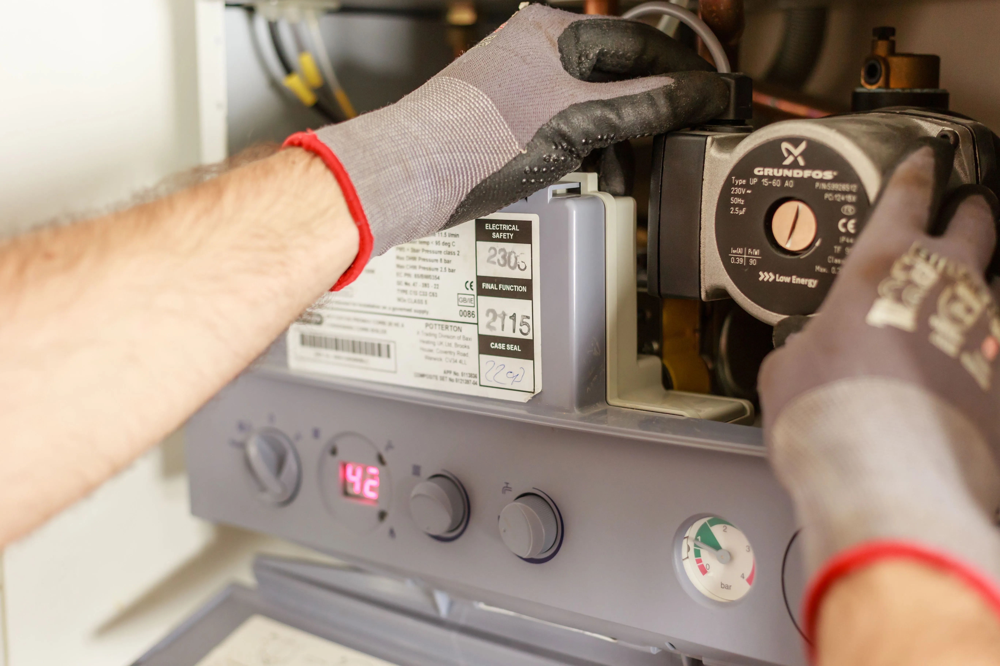

Dimensionnement Pompe à Chaleur
Calcul des déperditions totales à la température extérieure de base de votre zone (-10 °C à -11 °C en plaine de Saône et Domb
Diagnostic Scientifique • Norme NF EN 12831
Mesurer avant d'investir : éliminez les approximations commerciales grâce à une modélisation physique exacte des besoins de votre bâtiment.

Que vous prépariez une rénovation énergétique, le remplacement d'un générateur ou la construction d'une extension, une étude thermique sécurise chaque euro investi.
Calcul des déperditions totales à la température extérieure de base de votre zone (-10 °C à -11 °C en plaine de Saône et Domb